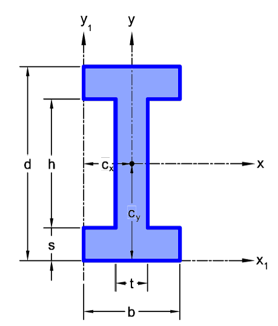

Perfil I Simétrico — Propiedades Geométricas
Propiedades geométricas para un perfil I de alas paralelas iguales (sección doblemente simétrica).
Notación y dimensiones

| Símbolo | Descripción |
|---|---|
| \(d\) | Altura total del perfil |
| \(b\) | Ancho de ala |
| \(t_f\) | Espesor de ala |
| \(t_w\) | Espesor de alma |
| \(h\) | Altura libre del alma: \(h = d - 2\,t_f\) |
Propiedades geométricas
| Propiedad | Símbolo | Ecuación | Observación |
|---|---|---|---|
| Área | \(A\) | \(A = 2\,b\,t_f + h\,t_w\) | |
| Perímetro | \(P\) | \(P = 2\,(2b + h) + 4\,t_f + 2\,t_w\) | |
| Centroide | \(\bar{x},\bar{y}\) | \(\bar{x}=b/2 ,\quad \bar{y} = d/2\) | Simetría doble; coincide con el centro geométrico |
| Inercia eje \(x\)–\(x\) | \(I_x\) | \(I_x = \dfrac{b\,d^3 - h^3(b - t_w)}{12}\) | Eje fuerte (horizontal) |
| Inercia eje \(y\)–\(y\) | \(I_y\) | \(I_y = \dfrac{2\,t_f\,b^3 + h\,t_w^3}{12}\) | Eje débil (vertical) |
| Inercia polar | \(J_i\) | \(J_i = I_x + I_y\) | |
| Radio de giro | \(r_x,\, r_y\) | \(r_x = \sqrt{I_x/A},\quad r_y = \sqrt{I_y/A}\) | |
| Módulo elástico | \(S_x,\, S_y\) | \(S_x = \dfrac{I_x}{\bar{y}},\quad S_y = \dfrac{I_y}{\bar{x}}\) | |
| Módulo plástico | \(Z_x\) | \(Z_x = b\,t_f\,(d - t_f) + \dfrac{t_w\,h^2}{4}\) | |
| Módulo plástico | \(Z_y\) | \(Z_y = \dfrac{b^2\,t_f}{2} + \dfrac{t_w^2\,h}{4}\) |
Calculadora
Ingresa las dimensiones de la sección y calcula automáticamente todas las propiedades.